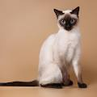
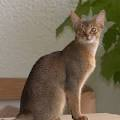

Maine Coon
Often called the "Gentle Giant,"
this is one of the largest domestic cat breeds.
They have tufted ears and thick, shaggy coats. Despite their size,
they are incredibly friendly, patient, and even enjoy playing in water!

Siamese Cat
Famous for their striking blue eyes and sleek bodies.
Siamese cats are highly social and "talkative."
They love to follow their owners around and are known for their intelligence and playful personality.

Abyssinian Cat
The Abyssinian is often described as the "clown of the cat world" because of its playful and mischievous nature.
Known for its elegant, athletic build and a unique "ticked" coat that resembles a wild cougar,
this breed is incredibly active and highly intelligent.
Unlike quiet lap cats, the Abyssinian is a natural explorer that loves to climb to the highest points in a room and participate in everything its owner is doing.
They are loyal, social, and possess a constant, burning curiosity that keeps them perpetually on the move.
